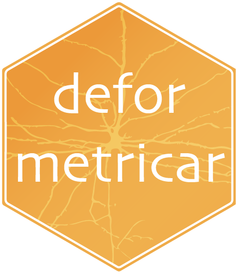

Fit ONE diffeomorphism to many matched objects (multi-object registration)
Source:R/deformetrica4.R
deformetrica_register_multi.RdThe flyconnectome/deformetricaLR recipe, ported to Deformetrica 4: register a
whole SET of matched cognate objects (e.g. left/right neuron tracts) with a
single diffeomorphism, optionally anchored by a shared landmarks point cloud.
Objects may mix meshes, neurons (polylines) and point sets; each sources[[i]]
is matched to targets[[i]] by name.
Usage
deformetrica_register_multi(
sources,
targets,
kernel_width,
object_kernel_width = kernel_width,
landmarks = NULL,
data_sigma = 0.5,
landmark_sigma = mean(data_sigma),
timepoints = 10L,
max_iterations = 150L,
device = c("auto", "cpu", "cuda"),
deformetrica = NULL,
workdir = tempfile("dfca_multi_"),
verbose = FALSE
)Arguments
- sources, targets
Named, equal-length lists of matched objects.
sourcesare templates (moving),targetsthe subject (fixed). Names become object ids.- kernel_width
Deformation kernel width.
- object_kernel_width
Per-object data kernel width (defaults to
kernel_width).- landmarks
Optional
list(source=, target=)of anchoring point matrices, added as a shared Landmark object (theinc_tracts_lmarksregulariser).- data_sigma
Data-attachment noise sigma. A single value applied to every object, or a per-object vector (recycled if length 1; matched by name to
sourcesif named, else taken in order). Smaller sigma weights that object more strongly in the fit — e.g. give homologous neuropils a small sigma and the outer hull a larger one so the neuropils drive the internal alignment.- landmark_sigma
Data-attachment sigma for the optional shared
landmarksobject (defaults to the mean ofdata_sigma).- timepoints, max_iterations, device, deformetrica, workdir, verbose
See also
deformetrica_register() for the single-object case.